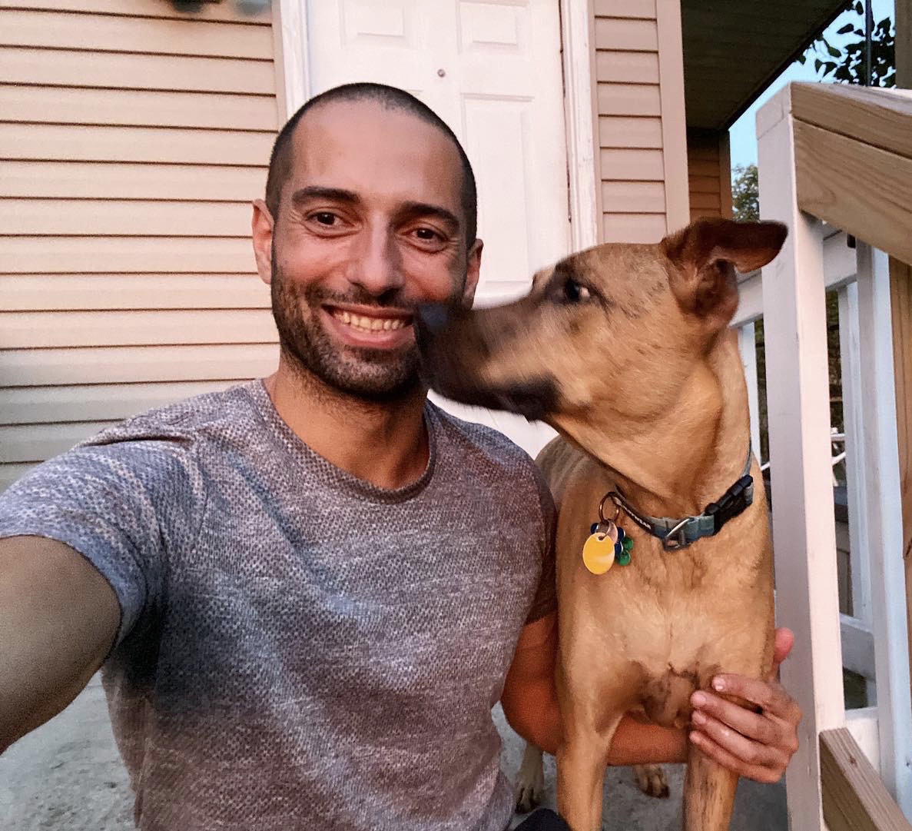

Pooya Hatami
Associate Professor
Department of Computer Science and Engineering
The Ohio State University
Office: Dreese Lab 489
Email: pooyahat at gmail dot com
Publications |
Teaching |
Google Scholar
Research interests
Theoretical computer science, pseudorandomness,
communication complexity, analysis of Boolean functions,
learning theory, and additive combinatorics.
Students
Selected publications (complete list: here)
-
Borsuk-Ulam and Replicable Learning of Large-Margin Halfspaces.
with Ari Blondal, Hamed Hatami, Chavdar Lalov, and Sivan Tretiak.
STOC 2026.
[arXiv]
-
Constant-Cost Communication is not Reducible to k-Hamming Distance.
with Yuting Fang, Nathan Harms, and Mika Göös.
STOC 2025.
[arXiv]
-
Online Learning and Disambiguations of Partial Concept Classes.
with Tsun-Ming Cheung, Hamed Hatami, and Kaave Hosseini.
ICALP 2023. Best Paper.
[arXiv]
-
The Implicit Graph Conjecture is False.
with Hamed Hatami.
FOCS 2022.
[arXiv]
-
Fooling Constant-Depth Threshold Circuits.
with William M. Hoza, Avishay Tal, and Roei Tell.
FOCS 2021.
[ECCC]
[TCS+ presentation by William Hoza]
-
Tight Bound on the Number of Relevant Variables in a Bounded Degree Boolean Function.
with John Chiarelli and Michael Saks.
Combinatorica 2020.
[Journal]
[arXiv]
-
Pseudorandom Generators from Polarizing Random Walks.
with Eshan Chattopadhyay, Kaave Hosseini, and Shachar Lovett.
CCC 2018.
[ECCC]
[Presentation at Simons Institute]
Theory of Computing 2019.
[ToC]
-
Improved Pseudorandomness for Unordered Branching Programs through Local Monotonicity.
with Eshan Chattopadhyay, Omer Reingold, and Avishay Tal.
STOC 2018.
[ECCC]
[Presentation at IAS by Eshan Chattopadhyay]
-
General Systems of Linear Forms: Equidistribution and True Complexity.
with Hamed Hatami and Shachar Lovett.
Advances in Mathematics, 2016.
[Journal]
[ECCC]
[Presentation at IAS]
-
Every Locally Characterized Affine-Invariant Property is Testable.
with A. Bhattacharyya, E. Fischer, H. Hatami, and S. Lovett.
STOC 2013.
[ECCC]
[Presentation at Simons Institute by Hamed Hatami]
Service
Program committees: SODA 2024, FOCS 2025, FOCS 2026.
Budget Chair, Computational Complexity Foundation, 2025–2028.
Last updated: May 2026.